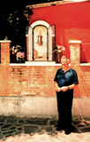
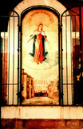
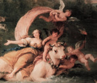

|
| |
|

Don Paolo |
 La Madonna della Biancheria |
|
What is the Venetian connection between women and sacred fabric? There is a language of fabric in Mediterranean and Venetian art and culture. How can we decode its meaning? There are three major conventions involving women and draped fabric which we can trace back to their archaic European roots: the goddess and mantle theme, the dangling string theme, and the omega shawl motif. |
|
| La Madonna della Misericordia |
La Madonna dei Carmini |
 Europa and the Bull |
All images on these pages are copyright © 1999 by Holly Smith Pedlosky
To learn more, send e-mail to Holly Smith Pedlosky
|
Would you like to meet some more Venetian housewives? |
Would you like to see some more Laundry? |
Would you like to find out more about laundry, cloth, and draped fabric in Venetian art? |